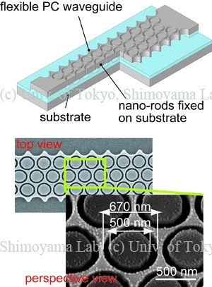

Photonic Crystal Attenuator with a Flexible Waveguide and Nano-Rods

We have devised a mechanical tuning method for a two-dimensional photonic crystal (2D-PC) attenuator with a flexible waveguide and double-layered nano-rods. The 2D-PCs have a triangular lattice of air holes in a silicon slab waveguide. PCs act as optical attenuators because of their photonic band gaps. By inserting nano-rods (500 nm in diameter) into PC's air holes (650 nm in diameter), the refractive index in the holes changes. Therefore transmittance can be tuned by insertion depth. We fabricated the device by an alignment-free simple process with direct EB lithography and demonstrated 7 dB attenuation at 1500 nm of incident wavelength.
Publications
- Tomoyuki Takahata, Kiyoshi Matsumoto, Isao Shimoyama, “A Wide Wavelength Range Optical Switch Using a Flexible Photonic Crystal Waveguide and Silicon Rods,” Journal of Micromechanics and Microengineering, vol. 20, no. 7, article no. 075009, 2010. [Paper]
- Tomoyuki Takahata, Kiyoshi Matsumoto, and Isao Shimoyama, “Effect of Slab Deflection on a Mechano-Optic Modulator,” 4th IEEE International Conference on Group IV Photonic, Tokyo, Japan, 19-21 September, 2007. [Proceedings]
- Tomoyuki Takahata, Kiyoshi Matsumoto, and Isao Shimoyama, “Mechanical Tuning of 2D Photonic Crystal with MEMS-based Electrostatic Actuator,” The 19th Annual Meeting of the IEEE Lasers & Electro-Optics Society, Montreal, Canada, 29 October-2 November, 2006. [Proceedings]
- Tomoyuki Takahata, Kazunori Hoshino, Kiyoshi Matsumoto, and Isao Shimoyama, “Photonic Crystal Attenuator with A Flexible Waveguide and Nano-Rods,” 19th IEEE International Conference on Micro Electro Mechanical Systems (MEMS '06), Istanbul, Turkey, January 22-26, 2006. [Proceedings]
Photonic Crystal Attenuator with a Flexible Waveguide and Nano-Rods
The purpose of our research is to tune two-dimensional (2D) slab photonic crystal (PhC) reflectors by inserting an AFM cantilever into one of the air holes. The 2D slab PhCs have column-shaped air holes on the triangular lattice in silicon air-bridge waveguide. The PhCs act as optical reflectors because of their photonic band gap. First, we estimated the effect of the cantilever insertion on the transmittance of the PhC reflectors with the finite difference time domain (FDTD) method. Then, we fabricated PhC reflectors by electron beam (EB) lithography and DRIE. Finally, we inserted the cantilever into one of their air holes. The transmittance with the cantilever was about twice as large as the original trancemittance. The results proved that we could tune the transmittance of the PhC reflectors.
Publications
- Tomoyuki Takahata, Kazunori Hoshino, Kiyoshi Matsumoto, Isao Shimoyama, “Transmittance Tuning of Photonic Crystal Reflectors using an AFM Cantilever,” Sensors and Actuators A, vol. 128, no. 1, pp. 197-201, 2006. [Paper]
- Tomoyuki Takahata, Kazunori Hoshino, Kiyoshi Matsumoto, Isao Shimoyama, “Photonic Crystal Tuned by Cantilever,” 18th IEEE International Conference on Micro Electro Mechanical Systems (MEMS '05), pp. 112-115, Miami, Fulorida, USA, January 30-February 3, 2005. [Proceedings]
WEB site of
Tomoyuki Takahata